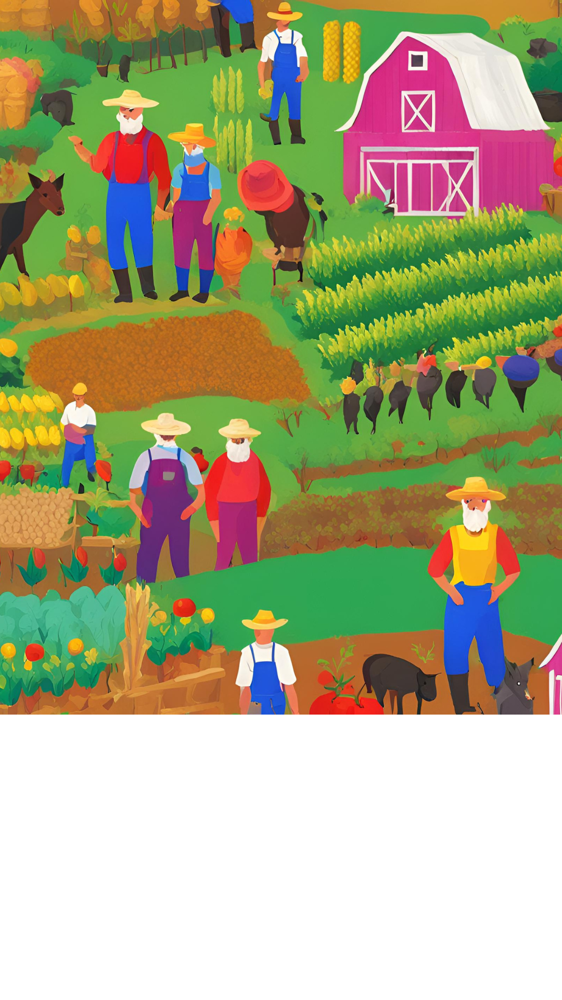
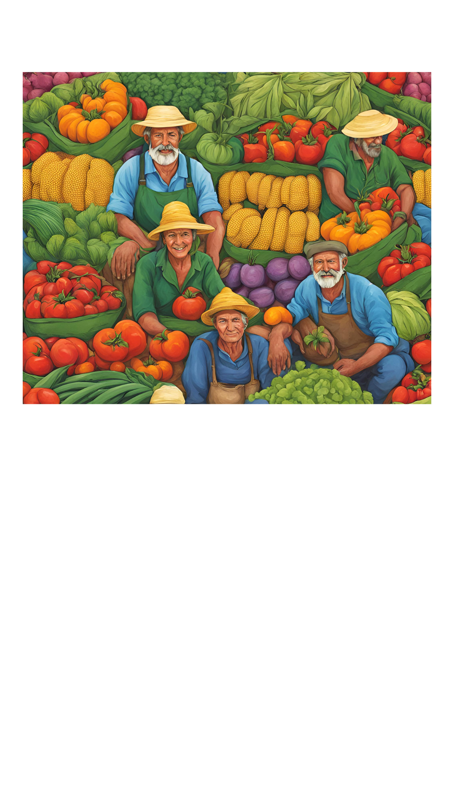
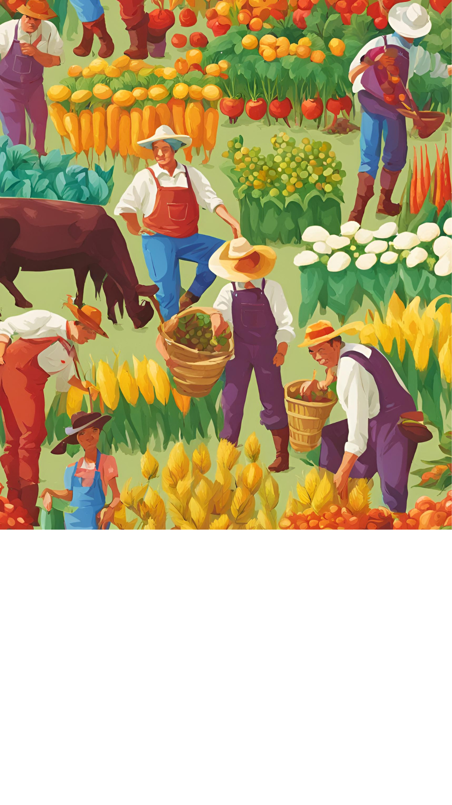

A agricultura é uma atividade econômica caracterizada pelo plantio e cultivo de alimentos. A fixação da população nômade contribuiu para a produção alimentar em nível mundial. Atualmente, a atividade agrícola é umas das principais da economia mundial. Os sistemas agrícolas estão divididos em extensivo e intensivo.
Morar no campo também pode apresentar alguns desafios, como: Menor acesso a serviços e infraestrutura: morar no campo pode implicar em uma menor disponibilidade e qualidade de serviços e infraestrutura, como saúde, educação, comunicação, transporte, comércio, lazer,
Proteger mananciais, áreas de preservação permanente e parques ambientais. Investir em saneamento básico. Priorizar transportes público e ativo (a pé e bicicleta). Desenvolver indicadores, instrumentos econômicos e analíticos do planejamento ambiental urbano.
Não desmatar florestas e realizar queimadas para ampliação de áreas agrícolas. Aplicar técnicas de reflorestamento em áreas degradadas e encostas; Realizar a correta destinação de resíduos e poluentes da atividade rural. Também, gerir e descartar de forma correta embalagens e defensivos agrícolas.
  